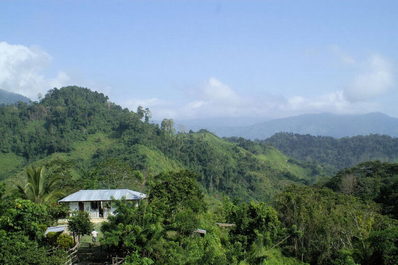

Para millones de personas, Juan Valdez es el caficultor del bigote, el sombrero y la mula Conchita. Pero detrás de aquella imagen hubo un hombre real: Carlos Castañeda, agricultor colombiano y uno de los pocos elegidos para encarnar un símbolo que terminó representando a todo un país.
Antes del personaje, el café.
Juan Valdez no fue una persona histórica ni el dueño de una marca. Fue un personaje creado por la Federación Nacional de Cafeteros de Colombia para comunicar el origen, el oficio y el orgullo detrás del café colombiano. Con el tiempo, esa figura dejó de ser solamente publicidad: se convirtió en una imagen reconocible de Colombia en el mundo.
Para que esa imagen tuviera verdad, no bastaba un actor cualquiera. Necesitaba alguien que entendiera la tierra, las madrugadas y el trabajo que hay antes de una taza de café.
Un hombre del campo.
Carlos Castañeda nació y creció en una finca cafetera de Andes, Antioquia. Conocía el oficio desde adentro. Esa experiencia fue parte de lo que lo llevó a ser elegido para representar a Juan Valdez, un papel que asumió con seriedad y que lo llevó a aparecer en campañas y actos alrededor del mundo.
La fuerza de Castañeda estaba en que no tuvo que fingir pertenecer al campo. Su presencia llevaba el peso de una vida real: la de un hombre que sabía lo que significa cultivar café y depender de la cosecha.

“Detrás de una marca reconocida había un hombre que sí conocía el trabajo del cafetal.”
El rostro de una idea.
Durante décadas, Juan Valdez ayudó a que una taza de café colombiano significara algo más que un producto. Se volvió una forma de hablar de origen, constancia y dignidad. Carlos Castañeda fue el último caficultor en encarnar públicamente esa figura.
Su muerte, en abril de 2024, recordó algo sencillo: los símbolos más duraderos funcionan porque nacen de personas y oficios verdaderos. El personaje era conocido; el hombre que lo hizo creíble también merece ser recordado.
El código Don Carlos.
Hay una diferencia entre ponerse un uniforme y representar algo. Carlos Castañeda no necesitaba inventarse una historia para encarnar a Juan Valdez: ya la había vivido. Esa es la lección. El estilo no siempre está en lo que uno muestra; muchas veces está en llevar con dignidad de dónde viene.
Nota editorial
Este es un artículo cultural independiente. Juan Valdez es una marca y personaje de terceros; Don Carlos no está afiliado con la marca ni con sus propietarios.
Para saber más